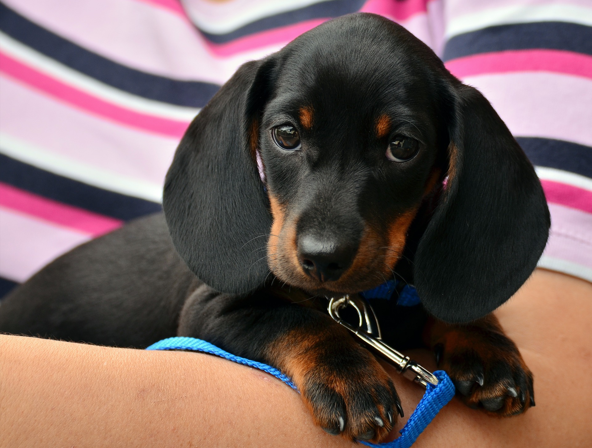

A tacskó (németesen daxli) Németországból származik, talán a középkorban tenyésztették. A XIX. századig csak nemeseknek lehetett ilyen kutyájuk. A német „Dachshund“, azaz borzkutya szó utal arra, hogy inkább kotoréklakók, borzok, rókák vadászatára használták – rövid lábaival befér „áldozatai“ lakhelyére. A feladata a vad kikergetése – volt. Manapság nagyon ritkán használják vadászkutyaként.